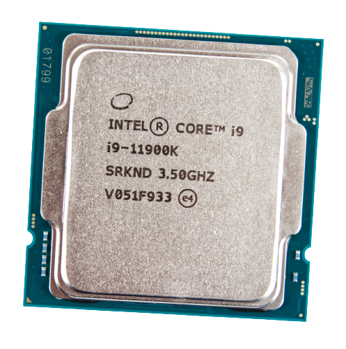
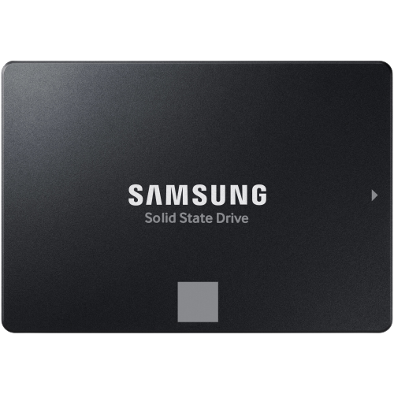
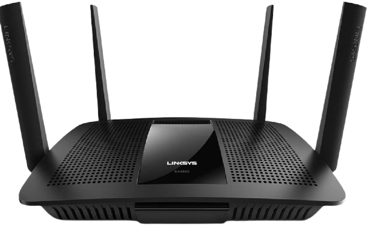

A processzor a személyi számítógépek, de például az okostelefonok központi feldolgozó egysége is.

A tartós állapotú meghajtó (más néven félvezető alapú meghajtó vagy szilárdtestmeghajtó, angol rövidítése SSD (a Solid-state drive kifejezésből)) félvezetős memóriát használó adattároló eszköz.

Az útválasztó, forgalomirányító vagy angol kifejezéssel: router[1] a számítógép-hálózatokban egy útválasztást végző eszköz, amelynek a feladata a különböző hálózatok – például egy otthoni vagy irodai hálózat és az internet, vagy egyes országok közötti hálózatok, vagy vállalaton belüli – összekapcsolása, az azok közötti adatforgalom irányítása.

A monitor a számítógép megjelenítő perifériája. A monitort VGA, DVI, HDMI vagy DisplayPort monitorkábel köti össze a videóadapterrel, mely utasításai alapján jeleníti meg a kívánt képet.